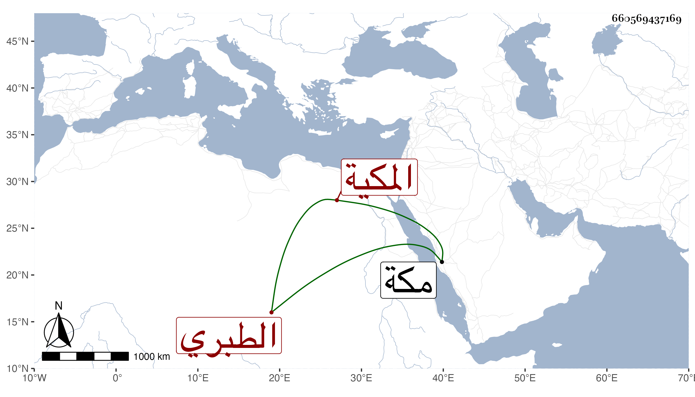

0902Sakhawi.DawLamic.ITO20230111-ara1.EIS1600.660569437169
Biography ID: 660569437169
1004
أم الوفا ابنة الرضى محمد بن المحب محمد بن الشهاب أحمد بن الرضى إبراهيم بن محمد بن إبراهيم الطبري المكية ، أمها عائشة ابنة أحمد بن حسن بن الزين . أجاز لها في سنة أربع عشرة فما بعدها عائشة ابنة ابن عبد الهادي والزين المراغي وابن الكويك وجماعة . وماتت في المحرم سنة إحدى وستين بمكة .
